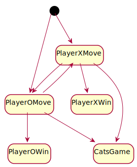

4.1. Public API¶
This section describes the public API of the library. The provided types and functions are used by other applications to create Tic Tac Toe games. The legend shown in Figure 4.1 is used for the type diagrams in this section.

Figure 4.1 Legend used for the type diagrams in this section.¶
An overview of the major public types is shown in Figure 4.2.

Figure 4.2 Major public modules, structures, and other types. Note: the module contains additional supporting types.¶
The library contains a single public module that holds the public types. The naming conventions used in this library follow those described in the Rust API Guidelines 1 per the Idiomatic Rust APIs user story.
Each of the major and supporting types are described below.
4.1.1. Game Management¶
Game management is handled by the Game structure. This structure is one of the central types provided by the crate. It contains the state machine logic and holds the underlying game board. Figure 4.3 shows the Game structure along with the GameState enumeration.
![hide empty fields
class Game {
+new()
+board() -> Board
+state() -> GameState
+can_move(position) -> bool
+do_move(position)
+start_next_game()
}
enum GameState {
PlayerXMove
PlayerOMove
PlayerXWin[VictorySets]
PlayerOWin[VictorySets]
CatsGame
+is_game_over() -> bool
}](../_images/plantuml-7c87539368cb8db028298b06f319d1276d9ad336.svg)
Figure 4.3 The Game structure and GameState enumeration.¶
A state machine to determine which player has the next move or when the game is over. The state diagram is shown in Figure 4.4.

Figure 4.4 State diagram of a Tic Tac Toe game.¶
When a new game starts either player X or player O takes the first turn. The players alternate making their moves until one of the end game conditions is encountered. The player that did not have the first turn last game takes the first turn next game.
4.1.1.1. Struct Game¶
Members of the Game structure are as follows:
- new()
Creates a new Tic Tac Toe game.
- board()
Gets the board associated with the game.
- state()
Gets the current state of the game.
- can_move()
Indicates if the square at the indicated position can be marked as owned. That is, if
can_move()returnstruethendo_move()is guaranteed to not panic.- do_move()
Marks the indicated square as being owned by the current player. The state of the game is updated as a side effect of
do_move(). Panics if the indicated position is already owned or if the game is over.- start_next_game()
Starts the next game by resetting the state machine ensuring the player who went second last game goes first next game.
Trait Implementations
Clone 2
Related Requirements
4.1.1.2. Enum GameSate¶
The game state enumeration contains a variant for each possible game state described in Figure 4.4 along with some additional helper methods.
- PlayerXMove
Player X’s turn to mark an empty square.
- PlayerOMove
Player O’s turn to mark an empty square.
- PlayerXWin[VictorySets]
Player X has won the game. The victory sets that contributed to the win are provided as the enum value.
- PlayerOWin[VictorySets]
Player O has won the game. The victory sets that contributed to the win are provided as the enum value.
- CatsGame
The game has ended in a draw where there are no winners.
- is_game_over()
Indicates if the state represents one of the game over states. That is, if either player has won or it is a cat’s game true is returned; otherwise, false is returned.
Trait Implementations
Copy
Eq
Debug
Related Requirements
4.1.2. Board Data¶
The board structure models a Tic Tac Toe game board. It holds the individual squares of the board and provides functions to access and iterate over the squares. The board and square structures along with supporting types are shown in Figure 4.5.
![hide empty fields
hide empty methods
class Board {
+new()
+size() -> i32
+get(position) -> Square
+get_mut(position) -> Square
+iter() -> Iter
+free_squares() -> FreeSquares
+victory_sets() -> VictorySets
}
interface std::iter::Iterator {
+Item: type
+next() -> Option<Item>
}
class Iter {
+Item: Square
}
std::iter::Iterator <|-- Iter
class FreeSquares {
+Item: Square
}
std::iter::Iterator <|-- FreeSquares
class VictorySets {
+Item: slice<Square>
}
std::iter::Iterator <|-- VictorySets
class Square {
+position: Position
+owner: Owner
}
class Position {
+row: i32
+column: i32
}
enum Owner {
PlayerX
PlayerO
None
}
' Hidden links are used to help with the diagram's layout.
Board -[hidden] std::iter::Iterator
VictorySets -[hidden]- Owner
Square -[hidden] Position
Position -[hidden] Owner](../_images/plantuml-cfbd9bf53441b346430e7d6ae65a828547cedde2.svg)
Figure 4.5 The Board structure and supporting types.¶
4.1.2.1. Struct Board¶
Data structure representing the Tic Tac Toe board. Provides multiple ways to access individual squares.
- new()
Constructs a new board.
- size()
Gets the size of board, that is the number of rows and columns. Note: boards are always square.
- get()
Gets the square at the indicated position. Panics if requested position is outside the size of the board.
- get_mut()
Gets a mutable square at the indicated position. Panics under the same situations as get().
- iter()
Gets an iterator that iterates over all the squares in the board.
- free_squares()
Gets an iterator that iterates the squares in the board that do not have an owner.
- victory_sets()
Gets an iterator that iterates over all the sets of squares that, if all owned by a player, would make the player victorious. E.g. this gets all the rows, columns, and both diagonals as slices.
The board structure also implements the Display trait. This provides a formatted output of the board and is suitable for use in simple console applications or debugging purposes. An example of the boards display is shown in Listing 4.1.
+---+---+---+
| X | O | O |
+---+---+---+
| O | X | |
+---+---+---+
| X | | X |
+---+---+---+
Trait Implementations
Display
Clone
4.1.2.2. Struct Square¶
Represents an individual square of the game board.
- position
The position the square is located at on the board.
- owner
The owner of the square.
Trait Implementations
Debug
Clone
Copy
Eq
4.1.2.3. Struct Position¶
The position structure represents a specific board position denoted by row and column.
- row
The row associated with the position.
- column
The column associated with the position.
Trait Implementations
Debug
Copy
Clone
From<(i32, i32)>
Eq
Hash
4.1.2.4. Enum Owner¶
The owner enumeration indicates which player owns a square, if any.
- PlayerX
Player X owns the square.
- PlayerO
Player O owns the square.
- None
No player owns the square.
Trait Implementations
Debug
Copy
Clone
Eq
4.1.2.5. Iterating Over Squares¶
The board structure provides several ways to iterate over board’s squares. 3 Helper types that implement the Iterator trait are used to provide this support.
- Iter
Iterates over all the squares in the board.
- FreeSquares
Iterates over squares that do not have an owner.
- VictorySets
Iterates over all the sets of squares that, if all owned by a player, would make the player victorious.
4.1.3. AI Moves¶
The AI move structure represents a move by an AI player. The AI move structure is shown in Figure 4.6.

Figure 4.6 AI Move structure.¶
See Artificial Intelligence Algorithms for details on how the AI selects a position.
Member Details
- new()
Constructs a new AI move using the provided game and a given probability of making a mistake. Panics if the game is over.
- position()
Gets the position selected by the AI player based on the previously provided game.
Trait Implementations
Debug
Related Requirements
Footnotes
- 1
See the [Rust-API-Guidelines] for details.
- 2
Rust’s clone and copy traits both serve to duplicate an object but each goes about duplication in a different manner. Copy performs an operation similar to memcpy where it just copies the bits of the object. Alternately, Clone explicitly duplicates the object giving the programmer control over what parts are cloned. For details see the discussion in Trait std::clone::Clone.
- 3
Rust’s standard library documentation states “Iterators are heavily used in idiomatic Rust code, so it’s worth becoming familiar with them.” For details see [Rust-Crate-std].